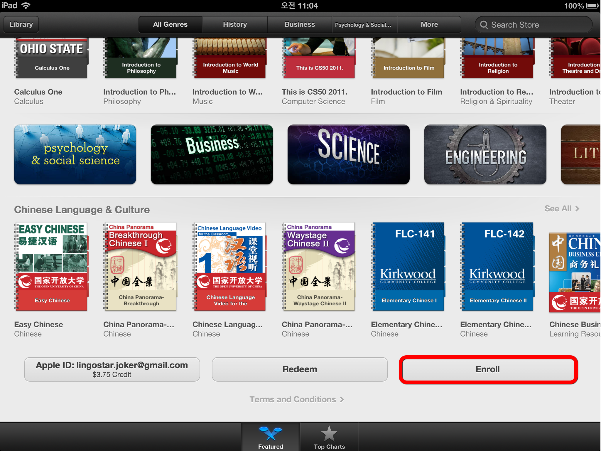
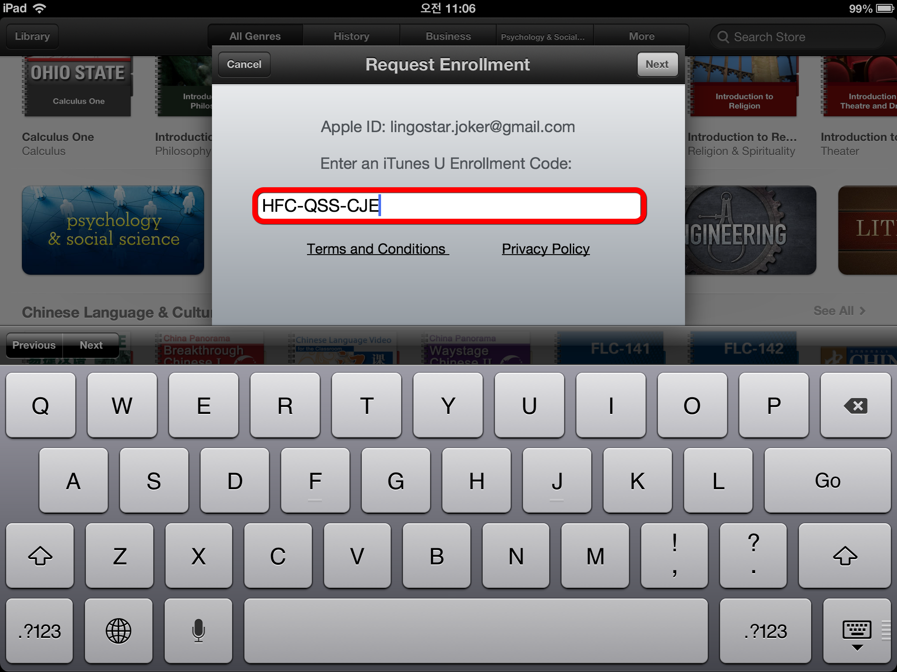
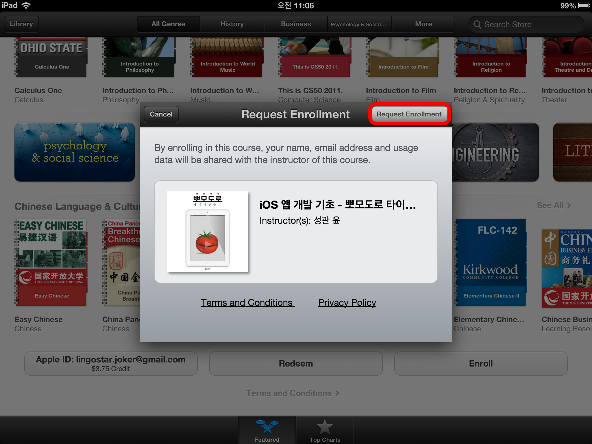
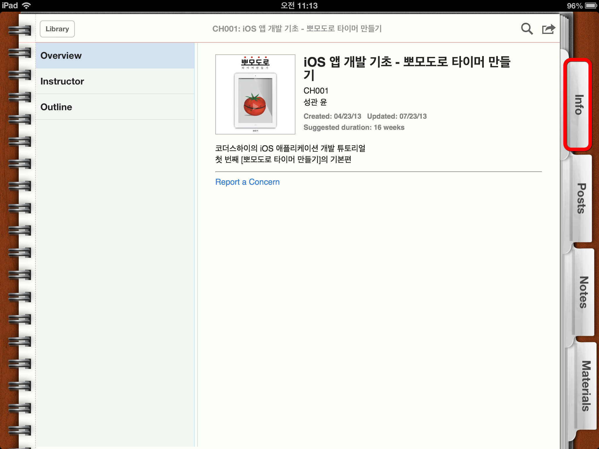
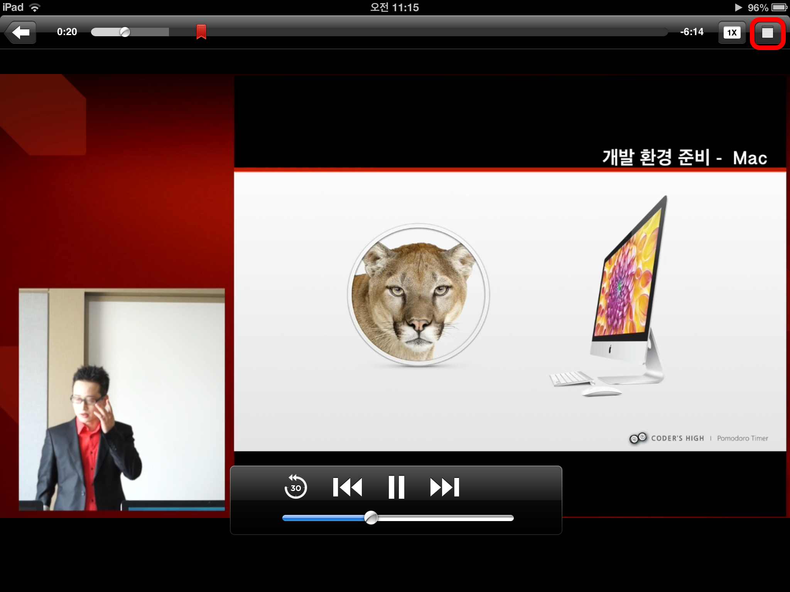
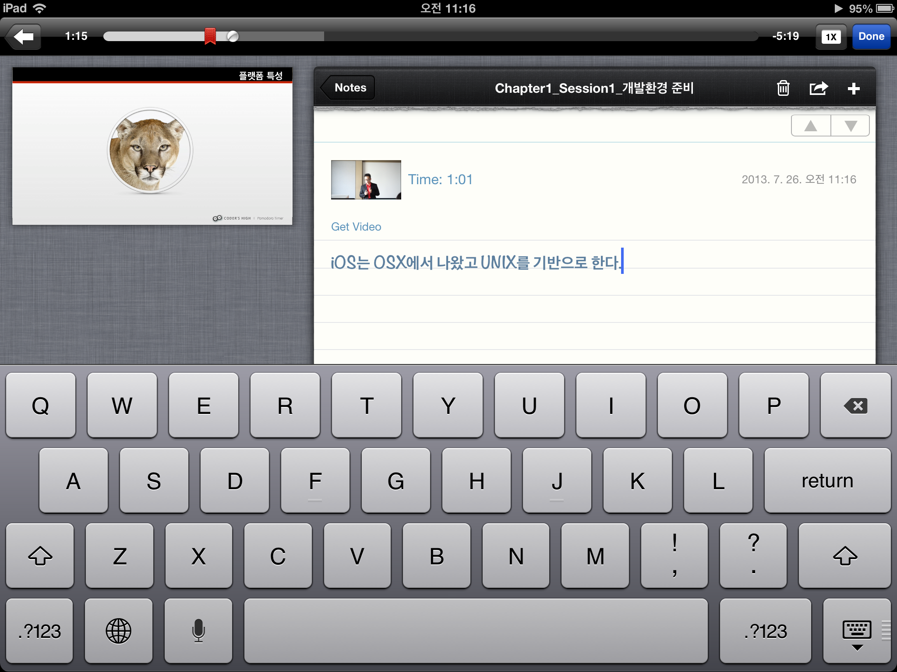
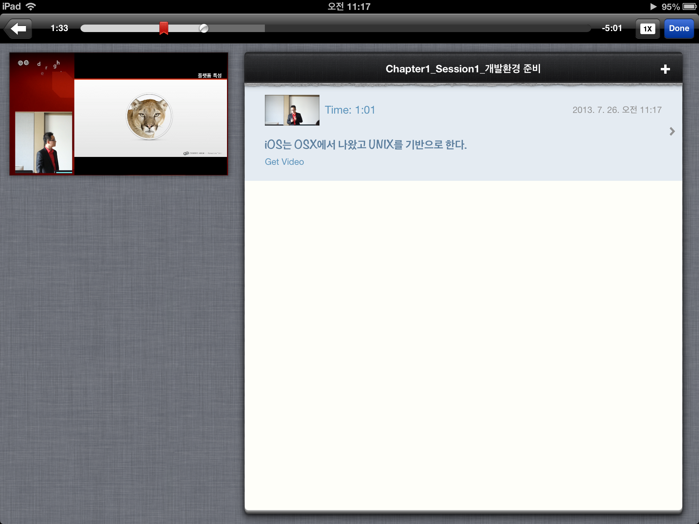
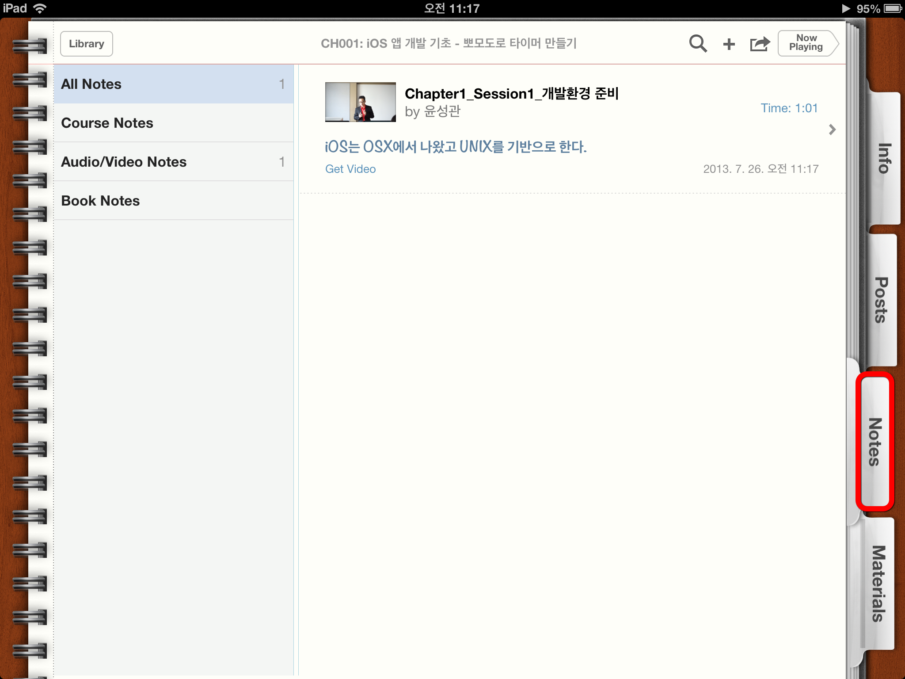
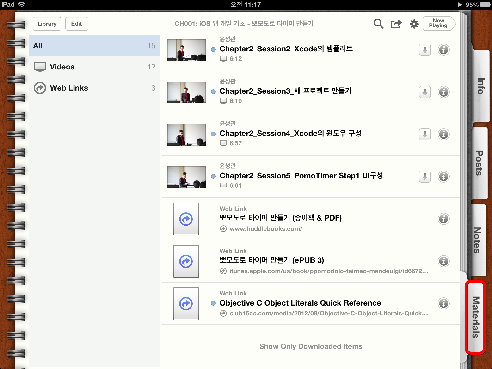

뽀모도로 타이머 만들기
KXK-6T7-PZ4
iTunesU 메인화면에서 왼쪽 상단의 Catalog 버튼을 선택합니다.
Catalog 화면을 가장 하단으로 스크롤 하여 Enroll 버튼을 선택합니다.
수강을 원하시는 강의의 코드를 입력 후 Next 버튼을 선택합니다. (강의 코드는 본 페이지 상단에서 확인 하실 수 있습니다.) >> 강의코드 보러가기
수강하실 강의를 확인 후, 좌측 상단의 Request Enrollment 버튼을 선택합니다.
강의 수강 요청을 완료했다는 메시지가 뜨면 OK 버튼을 눌러 수강 신청을 완료합니다.
강사의 승인 후에 정상적으로 강의를 수강하실 수 있습니다.
강사의 승인 후엔 강의 표지의 "Awaiting Approval" 마크가 사라지며, 수강이 가능한 상태를 의미합니다.

Info 탭에서는 Overview, 강사 정보 및 목차 등 수강하는 강의의 기본 정보를 확인 하실 수 있습니다.
Posts 탭에서 본격적으로 강의를 수강할 수 있습니다.
왼쪽에서 대단원을 선택한 후, 오른쪽 화면에서 세부 섹션을 선택하여 강의를 들으실 수 있습니다.
수강 화면입니다.
수강 도중에 오른쪽 상단의 아이콘을 선택하여 중요한 사항을 메모할 수 있습니다.
 Notes 탭에서 수강 도중 메모하신 내용들을 확인하실 수 있습니다.
Materials 탭에서는 강의의 모든 비디오 자료와 필요한 웹 링크 등을 확인하실 수 있습니다.
